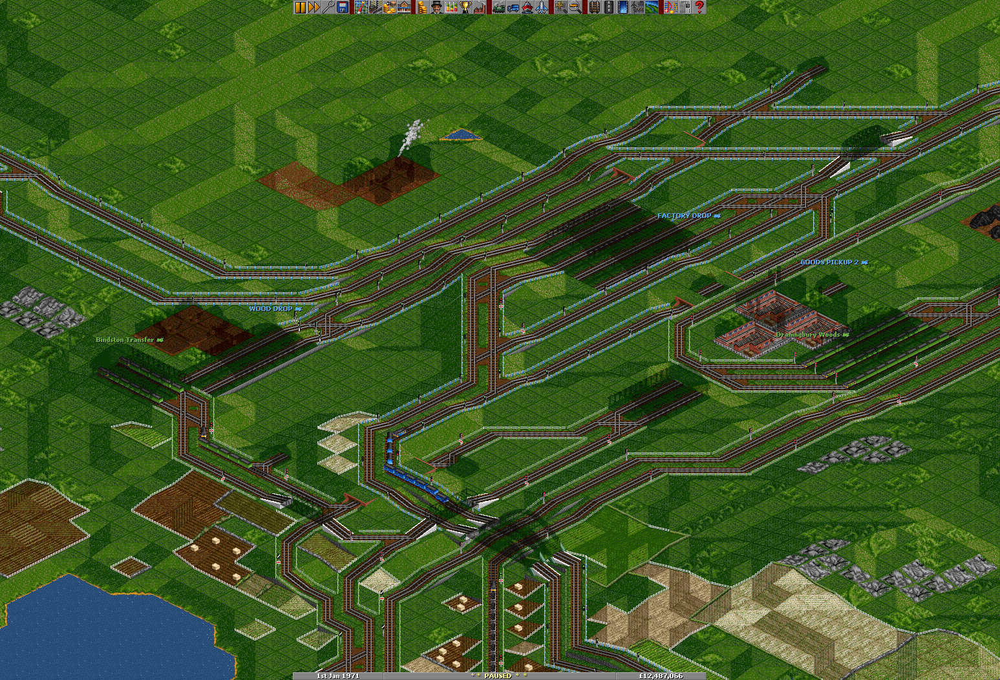
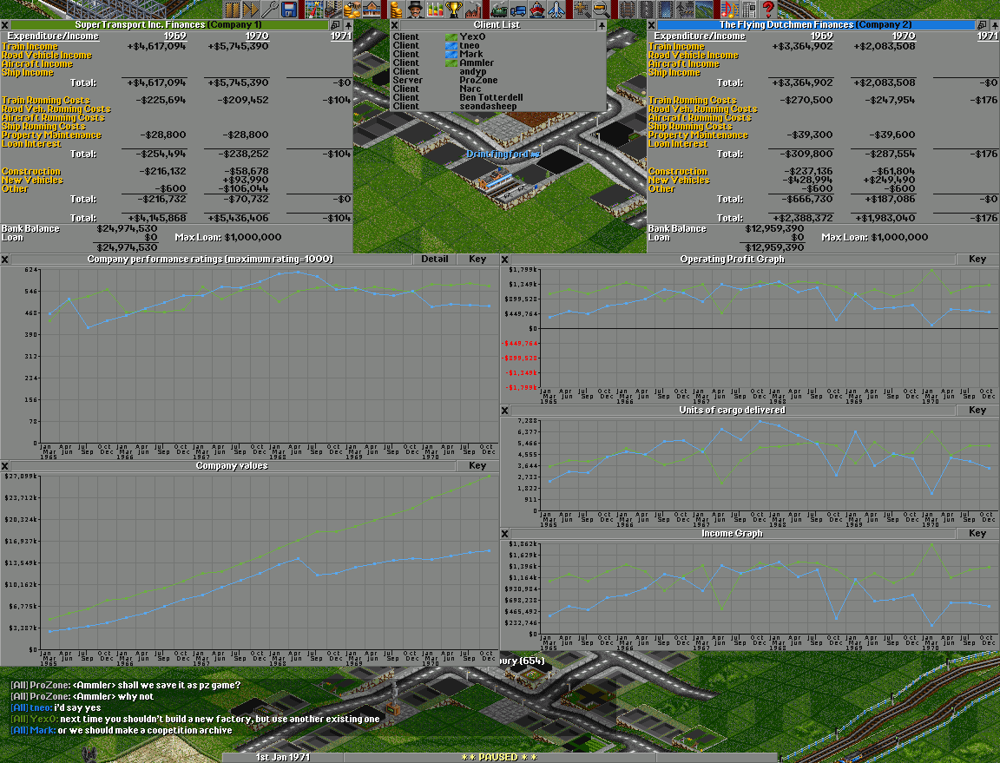

Coopetition PZ game
Today we were brainstorming on the PZ server for a new game. It finally brought us to a coopetition game. So Ammler + Yexo and Mark + myself teamed up to join a game of 8 years. 
In this area was a real competition going on between both teams for the goods created by the factory and saw mill.
The company colors were green (Ammler and Yexo) and blue (Mark and tneo). Green was off with a bit of a slow start, while blue had a good start with hooking up some farms and feed a factory. Green used a more common way of making money, by picking coal. Soon both teams were building away. Green started stealing the goods that were mostly produced by the drops of blue. To overcome this blue decided to build a complete new dropzone and switch all orders of the trains. It didn’t take long for green to notice and they build their station as well. Blue switched again the order, which caused some chaos for green to adjust their orders again. After a while blue changed the orders yet again.

The trick itself was neat, but caused a downfall in delivered cargo and income profit. Also the decision to make a new drop zone and finance the factory itself was very costly. Green on the other hand should have started with two way tracks from the beginning, because it took them quite some time to upgrade the single tracks they had layed out.
Narc our referee and in control of the pause command made sure we stopped exactly after 8 years. So on Jan 1st 1971 the game ended, that made green the clear winners.
Game results: 

More about coopetition: Coopetition Wiki entry
Categories: Community News, Coopetition, ProZone
Ammler March 27, 2009 23:46
It was very much fun, thank you guys…
Save: http://openttdcoop.org/files/prozone_archive/ProZoneGame_7_Final.sav
tneo March 28, 2009 09:14
Thanks for the game!
Updated with extra image of the game and wiki link.
planetmaker March 30, 2009 17:03
Wow, sounds like a fun way to play OpenTTD and a nice twist to the coopetition theme 🙂
EDIT: I hope to see the then newly born coopetition patch also around in the future 🙂 – and be part in one of the teams then, too!
timmaexx March 30, 2009 18:13
Really nice idea this coopetition!
Now, since this head2head branch is open i hope there are some more coopetitions where i hope i can join one time. 😉